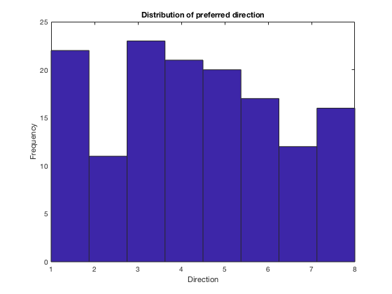
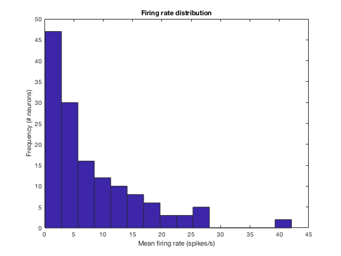

Yohyoh Wang
Contents
Lab 6
Population vector decoder
Train
clear all; close all; load('Lab5_CenterOutTrain.mat');
load('sT_p.mat');
rad=0:pi/4:2*pi;
spikeWindow=1;
for n=1:length(unit)
nUse=unit(n).times;
for dir=1:max(direction)
usego=go(direction==dir);
sT_all=[];
for goTime=1:length(usego)
spikeTimes=nUse(nUse >= usego(goTime)-spikeWindow & nUse <= usego(goTime));
spikeNum=length(spikeTimes);
sT_all=[sT_all;spikeNum];
end
sT_means(n,dir)=mean(sT_all)/spikeWindow;
end
end
cos_fun=@(p,theta) p(1)+p(2)*cos(theta-p(3));
for n=1:size(sT_means,1)
sT_fit(n,:) = cos_fun(p(n,:),rad);
end
if exist('sT_pref','var')
else
[m sT_pref] = max(sT_fit');
end
[m n_pref] = max(sT_means');
tuningAcc=sum(sT_pref==n_pref)/length(sT_pref);
sT_pref=rad(sT_pref);
Test
load('Lab6_CenterOutTest.mat')
spikeWindow=1;
for dir=1:max(direction)
rad(dir)=(dir-1)*(pi/4);
degrees(dir)=(dir-1)*45;
end
popVec=zeros(length(go),2);
for trial=1:length(go)
for neuron=1:length(unit)
sR=sum(unit(neuron).times >= go(trial)-spikeWindow & unit(neuron).times <= go(trial))/spikeWindow;
popVec(trial,1)=popVec(trial,1)+sR*cos(sT_pref(neuron));
popVec(trial,2)=popVec(trial,2)+sR*sin(sT_pref(neuron));
end
popDir(trial,1)=atan2(popVec(trial,2),popVec(trial,1));
end
popDir(popDir<0)=popDir(popDir<0)+2*pi;
for trial=1:length(popDir)
[m popDir(trial,2)]=min(abs(popDir(trial,1)-rad));
end
Q1 Performance
popAcc=sum(popDir(:,2)==direction)/length(popDir);
disp(['The population vector was accurate on ' num2str(popAcc*100) '% of trials.'])
The population vector was accurate on 36.25% of trials.
Q2
disp(['The cosine tuning curve correctly described ' num2str(tuningAcc*100) '% of tuning preferences.'])
hist(n_pref,8); title(['Distribution of preferred direction'])
ylabel(['Frequency']); xlabel(['Direction']);
The cosine tuning curve correctly described 30.9859% of tuning preferences.

Q2 Additional comments
Q3 Weighting with change in firing rate from baseline
for neuron=1:length(unit)
for trial=1:length(go)
sR(neuron,trial)=sum(unit(neuron).times >= go(trial)-spikeWindow & unit(neuron).times <= go(trial))/spikeWindow;
end
baseline(neuron)=mean(sR(neuron,:));
sR_baseline(neuron,:)=(sR(neuron,:)-baseline(neuron))/baseline(neuron);
end
popVec_b=zeros(length(go),2);
for trial=1:length(go)
for neuron=1:length(unit)
popVec_b(trial,1)=popVec_b(trial,1)+sR_baseline(neuron,trial)*cos(sT_pref(neuron));
popVec_b(trial,2)=popVec_b(trial,2)+sR_baseline(neuron,trial)*sin(sT_pref(neuron));
end
popDir(trial,1)=atan2(popVec_b(trial,2),popVec_b(trial,1));
end
popDir(popDir<0)=popDir(popDir<0)+2*pi;
for trial=1:length(popDir)
[m popDir(trial,2)]=min(abs(popDir(trial,1)-rad));
end
popAcc=sum(popDir(:,2)==direction)/length(popDir);
disp(['The population vector with baselined trials was accurate on ' num2str(popAcc*100) '% of trials.'])
The population vector with baselined trials was accurate on 41.25% of trials.
Q3 Comments
Maximum likelihood decoder
Train with poisspdf
clear all; close all
load('Lab5_CenterOutTrain.mat');
spikeWindow=1;
for n=1:length(unit)
nUse=unit(n).times;
for dir=1:max(direction)
usego=go(direction==dir);
sT_all=[];
for goTime=1:length(usego)
spikeTimes=nUse(nUse >= usego(goTime)-spikeWindow & nUse <= usego(goTime));
spikeNum=length(spikeTimes);
sT_all=[sT_all;spikeNum];
end
sT_means(n,dir)=mean(sT_all)/spikeWindow;
sT_error(n,dir)=std(sT_all/spikeWindow)/sqrt(length(sT_all));
end
end
save('sT_means.mat','sT_means');
Test
clear all; close all;
load('Lab6_CenterOutTest.mat');
load('sT_means.mat');
spikeWindow=1;
for dir=1:max(direction)
dir_prior(dir)=sum(direction==dir)/length(direction);
end
for goInd=1:length(go)
for n=1:length(unit)
sR=sum(unit(n).times >= go(goInd)-spikeWindow & unit(n).times <= go(goInd));
prd(n,:)=log(poisspdf(sR,sT_means(n,:)));
end
pRd(goInd,:)=sum(prd,1);
end
[m dir_poiss]=max(pRd');
Q1 Performance
poissAcc=sum(dir_poiss'==direction)/length(direction);
disp(['Assuming a Poisson firing rate model, the maximum likelihood algorithm was accurate on ' num2str(poissAcc*100) '% of trials.'])
Assuming a Poisson firing rate model, the maximum likelihood algorithm was accurate on 68.75% of trials.
Maximum likelihood performance (Poisson)
Train with normpdf
for goInd=1:length(go)
for n=1:length(unit)
sR=sum(unit(n).times >= go(goInd)-spikeWindow & unit(n).times <= go(goInd));
prd_norm(n,:)=log(normpdf(sR,(sT_means(n,:)),std(sT_means(n,:))));
end
pRd_norm(goInd,:)=sum(prd_norm,1);
end
[m dir_norm]=max(pRd_norm');
Q4 Performance
normAcc=sum(dir_norm'==direction)/length(direction);
disp(['Assuming a Gaussian firing rate model, the maximum likelihood algorithm was accurate on ' num2str(normAcc*100) '% of trials.'])
Assuming a Gaussian firing rate model, the maximum likelihood algorithm was accurate on 63.75% of trials.
Maximum likelihood performance (Gaussian)
hist(mean(sT_means'),15); title(['Firing rate distribution'])
xlabel(['Mean firing rate (spikes/s)'])
ylabel(['Frequency (# neurons)'])
